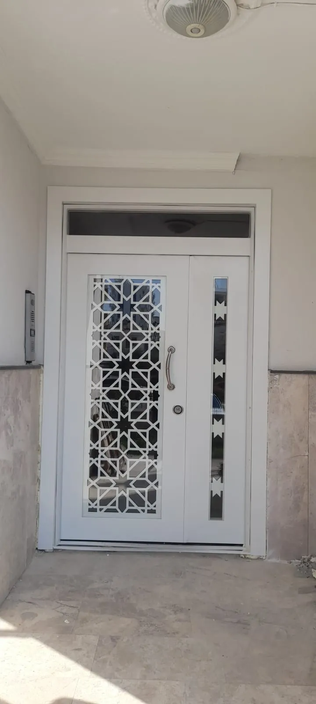
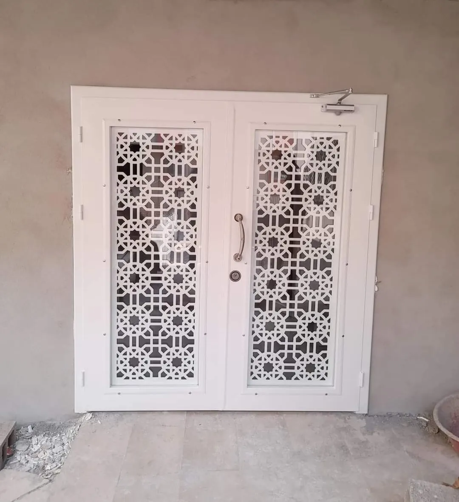
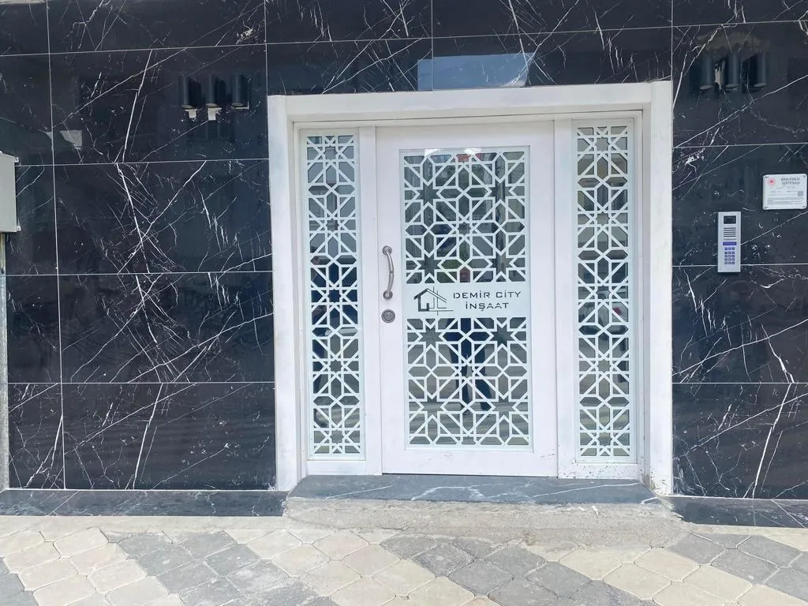

Beyaz Renkli Kapı Modelleri ve Dekorasyon Fikirleri
Beyaz renkli kapı, modası hiç geçmeyen ve her dekorasyon tarzına uyum sağlayan en güvenli tercihtir. Küçük bir odayı ferah, karanlık bir koridoru aydınlık gösteren beyaz renkli kapı, bu yüzden yeni yapılan ve yenilenen evlerde en çok sorulan modellerin başında gelir. Osmaniye'de üretim yapan Emin Kapı olarak, beyaz kapı almadan önce bilmeniz gerekenleri bu yazıda bir araya getirdik.

Beyaz Renkli Kapı Neden Bu Kadar Çok Tercih Ediliyor?
Beyaz, ışığı yansıtan bir renktir. Bu basit özellik, kapıyı dekorasyonun en kullanışlı parçalarından biri hâline getirir.
- Mekânı büyütür: Açık renk yüzeyler duvarla bütünleşir ve odayı olduğundan geniş gösterir.
- Her renge uyar: Duvar boyasını, parkeyi ya da mobilyayı değiştirdiğinizde kapıyı değiştirmeniz gerekmez.
- Zamansızdır: Trend renkler birkaç yılda eskir; beyaz her dönemde güncel kalır.
- Evin değerini artırır: Ferah ve bakımlı görünen ev, satışta ve kiralamada daha çok ilgi görür.
Beyaz Renkli Kapı Modelleri ve Malzeme Seçenekleri
Aynı beyaz, farklı malzemede farklı sonuç verir. Kullanım yerine göre doğru malzemeyi seçmek, kapının yıllar sonraki görünümünü belirler.
| Model | Kullanım yeri | Öne çıkan özelliği |
|---|---|---|
| Beyaz lake kapı | Oda, salon, yatak odası | Pürüzsüz boyalı yüzey, en şık görünüm |
| Beyaz PVC kaplı kapı | Banyo, mutfak, kiralık daireler | Neme dayanıklı, kolay silinir, ekonomik |
| Beyaz Amerikan panel kapı | Bütçe dostu projeler | Hafif, hızlı üretim, uygun fiyat |
| Beyaz camlı iç kapı | Salon, mutfak, koridor | Odalar arasında ışık geçişi sağlar |
| Beyaz çelik kapı | Daire ve villa girişi | Güvenlik ile aydınlık görünümü birleştirir |
Beyaz Lake Kapı
Beyaz denince akla ilk gelen modeldir. MDF gövde üzerine kat kat uygulanan lake boya, mat ya da parlak pürüzsüz bir yüzey verir. Düz, derzli veya çıtalı desen seçenekleriyle hem modern hem klasik evlere uyar. Ayrıntılı bilgi için lüks iç kapı modelleri sayfamıza bakabilirsiniz.
Beyaz Çelik Kapı
Dış kapıda beyaz, son yıllarda özellikle modern apartman ve villalarda öne çıkıyor. İç yüzü beyaz, dış yüzü farklı renkte üretim de mümkündür; böylece kapı içeride oda kapılarıyla, dışarıda bina cephesiyle uyum sağlar. Seçenekler için Osmaniye çelik kapı sayfamızı inceleyin.
Beyaz Renkli Kapı ile 5 Zamansız Dekorasyon Fikri
- Beyaz kapı ve açık meşe parke: İskandinav tarzının klasik eşleşmesidir; evi sıcak ve aydınlık gösterir.
- Beyaz kapı ve koyu zemin: Antrasit ya da ceviz tonlu zeminle güçlü bir kontrast oluşturur.
- Siyah kapı kolu: Mat siyah kol ve menteşe, sade beyaz kapıya modern bir karakter kazandırır.
- Renkli duvar önünde beyaz kapı: Yeşil, lacivert veya toprak tonlu duvarlarda kapı ve pervaz bir çerçeve gibi öne çıkar.
- Kapı, süpürgelik ve pervaz aynı beyazda: Tüm doğramalar aynı tonda olduğunda ev çok daha derli toplu görünür.
Kapıyla birlikte zemin de yenilenecekse, parke ve kapı rengini aynı anda seçmek en doğru sonucu verir. Emin Kapı'da iç kapı, mutfak dolabı ve laminat parkeyi aynı yerden seçebilirsiniz.
Beyaz Renkli Kapı Sararır mı, Nasıl Temizlenir?
En sık sorulan soru budur. Kaliteli boya ve kaplama kullanılan bir beyaz renkli kapı, doğru bakımla uzun yıllar rengini korur. Sararmanın başlıca nedenleri düşük kaliteli boya, sürekli doğrudan güneş ve yanlış temizlik malzemesidir.
Bakım için birkaç basit kural yeterlidir:
- Nemli, yumuşak bir bezle ve gerekirse az miktarda arap sabunuyla silin.
- Çamaşır suyu, tiner ve aşındırıcı krem temizleyicilerden uzak durun.
- Tel sünger ya da sert fırça kullanmayın; yüzeyi çizer ve matlaştırır.
- Kol çevresindeki el izlerini biriktirmeden temizleyin.
Islak hacimlerde, yani banyo ve tuvalette, lake yerine neme dayanıklı PVC kaplı model seçmek daha doğrudur.
Osmaniye'de Beyaz Renkli Kapı Üretimi: Emin Kapı
Emin Kapı, Osmaniye'de 15 yılı aşkın süredir iç oda kapısı ve çelik kapı üreten yerel bir firmadır. Kapılarınız duvar kalınlığınıza ve kapı boşluğunuza göre ölçüye özel üretilir; kırık beyaz, krem ya da saf beyaz gibi ton tercihleriniz dikkate alınır. Tüm seçenekleri oda kapı modelleri sayfamızda bulabilirsiniz.
Osmaniye merkez ile Kadirli, Düziçi, Bahçe, Toprakkale, Hasanbeyli ve Sumbas ilçelerine montaj yapıyoruz. Ceyhan, Kozan, Erzin, Dörtyol ve Nurdağı gibi komşu ilçelerdeki konut projelerine de toplu üretimle hizmet veriyoruz.


Sıkça Sorulan Sorular
Beyaz kapı çabuk kirlenir mi?
Kir beyazda daha kolay fark edilir, ancak pürüzsüz lake ve PVC yüzeyler nemli bezle saniyeler içinde temizlenir.
Evdeki tüm kapılar beyaz olmak zorunda mı?
Hayır. Oda kapıları beyaz, giriş kapısının iç yüzü ahşap tonunda olabilir. Önemli olan ton ve kol uyumudur.
Lake mi, PVC mi tercih etmeliyim?
Görünüm önceliğinizse lake; bütçe ve neme dayanım önceliğinizse PVC daha uygundur. Çoğu evde ikisi birlikte kullanılır.
Beyaz Renkli Kapı İçin Bize Ulaşın
Evinize en uygun beyaz renkli kapı modelini birlikte seçelim. Emin Kapı'yı arayın: 0542 236 236 5. Fabrikamız Adnan Menderes Mah. Trafo Cd. No: 6/A Osmaniye adresindedir.
Rehber